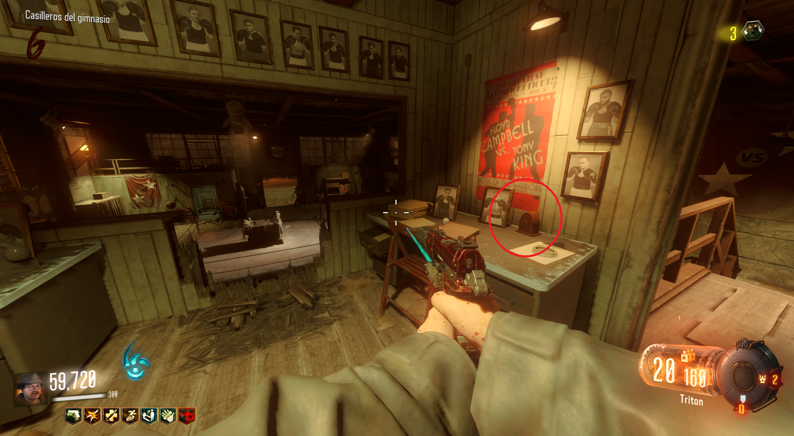
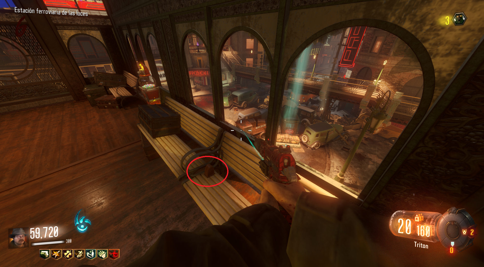
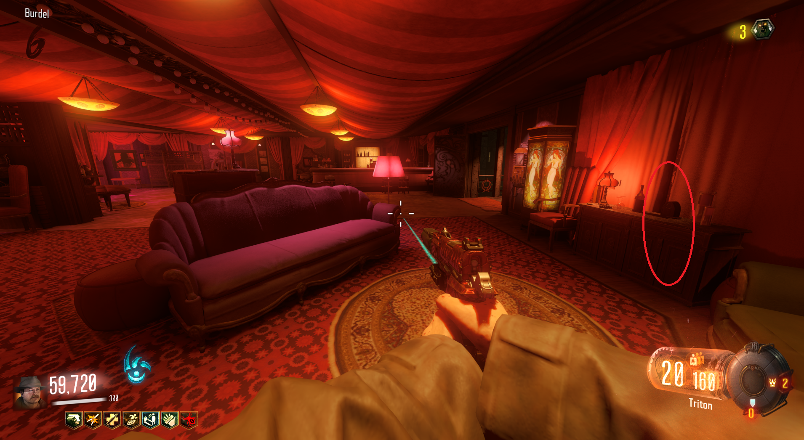

Reproducir canción
Para reproducir la canción de Shadows of Evil, tendremos que interactuar con tres viejas radios por el mapa
Primera parte:
En el ritual de Waterfront, en la planta alta.

Segunda parte:
En la estación de Footlight, encima de un banco.

Tercera parte:
En Canals, justo a la derecha de la salida del RubyRabbit.
